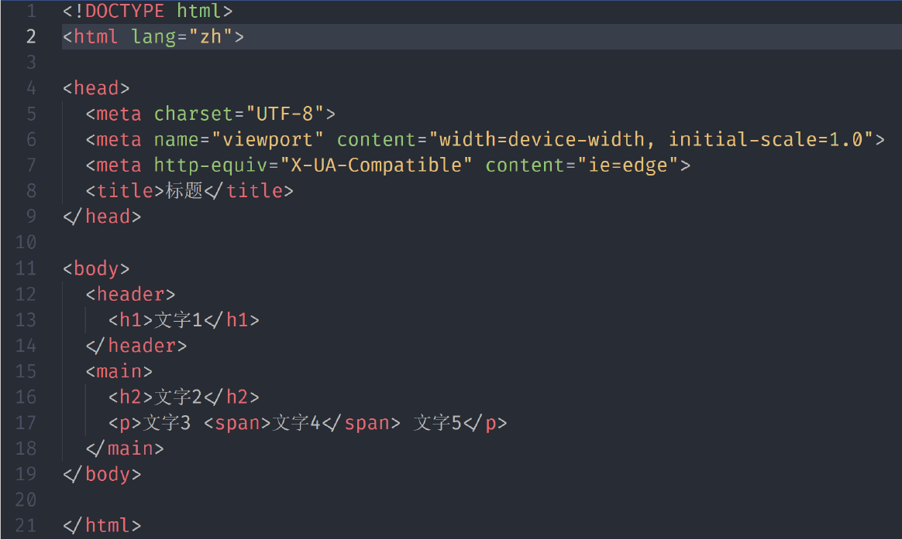

DOM
基本概念
- 学习 DOM 需要什么知识？
- 理解简单的 JS 语法，如变量、if else、循环
- 会背 JS 的其中数据类型-四基两空一对象：number,string,bool,symbol,null,undefined,object
- 知道 JS 的五个 falsy 值：0、NaN、null、undefined、””
- 知道函数是对象，数组也是对象
- 会用 div 和 span 标签
- 会简单的 CSS 布局
- 网页其实就是一棵树-DOM（文档对象模型）树
- 例如这段代码
- 对应的 DOM 树就是：

- JS 如何操作这棵树？
- 浏览器往 window 上加一个 document 即可
- JS 用 document 操作网页，这就是 Document Object Model 文档对象模型
- DOM 获取元素，也叫标签
- window.id 或者直接 id
- document.getElementById(‘div’)
- document.getElementsByTagName(‘div’)[0]
- document.getElementsByClassName(‘red’)[0]
- document.querySelector(‘#div’)
- document.querySelectorAll(‘.red’)[0]
- 注意
- 工作中用 document.querySelector 和 document.querySelectorAll
- 做 demo 可以直接用 window.id 或者 id,但是同事可能不知道这个方法
- 要兼容 IE 的可怜虫才用 getElement(s)ByXXX
- 获取特定元素
- 获取 html 元素:document.documentElement
- 获取 head 元素:document.head
- 获取 body 元素：document.body
- 获取窗口：window
- 获取所有元素：document.all
- document.all 是个奇葩，是第 6 个 falsy 值
- 获取到的元素是什么？-是一个对象，它有六层原型：
- 节点 Node 包括以下几种
- 1 表示元素 Element，也叫标签 Tag
- 3 表示文本 Text
- 8 表示注释 Comment
- 9 表示文档 Document
- 11 表示文档片段 DocumentFragment
- 记住 1 和 3 即可

节点的增删改查-程序员的宿命就是增删改查
增
- 创建一个标签节点
- let div1 = document.createElement(‘div’)
- document.createElement(‘style’)
- document.createElement(‘script’)
- document.createElement(‘li’)
- 创建一个文本节点
- text1 = document.createTextNode(‘你好’)
- 标签里面插入文本
- div1.appendChild(text1)
- div1.innerText = ‘你好’ 或者 div1.textContent = ‘你好’
- 但是不能用 div1.appendChild(‘你好’)
- 插入页面中
- 你创建的标签默认处于 JS 线程中
- 你必须把它插到 head 或者 body 里面，它才会生效
- document.body.appendChild(div1)
- 或者已在页面中的元素.appendChild(div1)
页面中有 div#test1 和 div#test2
let div = document.createElement("div"); test1.appendChild(div); test2.appendChild(div);- 请问最终 div 出现在哪里？
- 答：test2 里面，一个元素不能出现在两个地方，除非复制一份
删
- 两种方法
- 旧方法：parentNode.removeChild(childNode)
- 新方法： childNode.remove()
- 如果一个 node 被移出页面（DOM 树），那么它还可以再次回到页面中么？
- 可以，因为只是移出到内存中，并未被删除，可以重新添加该节点
改属性
- 写标准属性
- 改 class: div.className = ‘red blue’(会覆盖之前的类)
- 改 class: div.classList.add(‘red’)(不会覆盖之前的)
- 改 style: div.style = ‘width:100px;color:blue;’
- 改 style 的一部分: div.style.width = ‘200px’
- 大小写: div.style.backgroundColor = ‘white’
- 改 data-*属性: div.dataSet.x = ‘frank’
- 读标准属性
- div.classList / a.href
- div.getAttribute(‘class’) / a.getAttribute(‘href’)
- 两种方法都可以，但值可能稍微有些不同
改事件处理函数
- div.onclick 默认为 null
- 默认点击 div 不会有任何事情发生
- 但是如果你把 div.onclick 改为一个函数 fn
- 那么点击 div 的时候，浏览器就会调用这个函数
- 并且是这样调用的 fn.call(div,event)
- div 会被当作 this
- event 则包含了点击时间的所有信息，如坐标
- div.addEventListener
- 是 div.onclick 的升级版，之后的课程单独讲
改内容
- 改文本内容
- div.innerText = ‘xxx’
- div.textContent = ‘xxx’
- 两者几乎没有区别
- 改 HTML 内容
- div.innerHTML = ‘重要内容‘
- 改标签
- div.innerHTML = “//先清空
- div.appendChild(div2)//再加内容
- 改爸爸
- newParent.appendChild(div)//直接这样就可以了，直接从原来的地方消失
查
- 查爸爸：node.parentNode 或者 node.parentElement
- 查爷爷：node.parentNode.parentNode
- 查子代：node.childNodes 或者 node.children
- 查兄弟姐妹：
- node.parentNode.childNodes(还要排除自己)
- node.parentNode.children(还要排除自己)
- 查看老大：node.firstChild
- 查看老幺：node.lastChild
- 查看上一个哥哥/姐姐: node.previousSibling
- 查看下一个弟弟/妹妹： node.nextSibling
DOM 操作是跨线程的
- 浏览器分为渲染引擎和 JS 引擎
- 各线程各司其职
- JS 引擎不能操作页面，只能操作 JS
- 渲染引擎不能操作 JS，只能操作页面
- document.body.appendChild(div1)
- 这句 JS 是如何改变页面的？
- 跨线程通信
- 当浏览器发现 JS 在 body 里面加了个 div1 对象
- 浏览器就会通知渲染引擎在页面里也新增一个 div 元素
- 新增的 div 元素所有属性都照抄 div1 对象
- 插入新标签的完整过程
- 在 div1 放入页面之前：你对 div1 所有的操作都属于 JS 线程内的操作
- 把 div1 放入页面之时：浏览器会发现 JS 的意图，就会通知渲染线程在页面中渲染 div1 对应的元素
- 把 div1 放入页面之后
- 你对 div1 的操作都有可能会触发重新渲染
- div1.id = ‘newId’可能会重新渲染，也可能不会
- div1.title = ‘nes’可能会重新渲染，也可能不会
- 如果你连续对 div1 多次操作，浏览器可能会合并成一次操作，也可能不会
- 属性同步
- 标准属性
- 对 div1 的标准属性的修改，会被浏览器同步到页面中
- 比如 id、className、title
- data-*属性
- 同上
- 非标准属性
- 对非标准属性的修改，则只会停留在 JS 线程中
- 不会同步到页面里
- 启示
- 如果你有自定义属性，又想被同步到页面中，请使用 data-x 作为前缀
- 标准属性
- Property v.s. Attribute
- JS 线程中 div1 的所有属性，叫做 div1 的 property
- 渲染引擎中 div1 对应标签的属性，叫做 attribute
- 区别：
- 大部分时候，同名的 property 和 attribute 值相等
- 但如果不是标准属性，那么它俩只会在一开始时相等
- 但注意 attribute 只支持字符串
- 而 property 支持字符串、布尔等类型